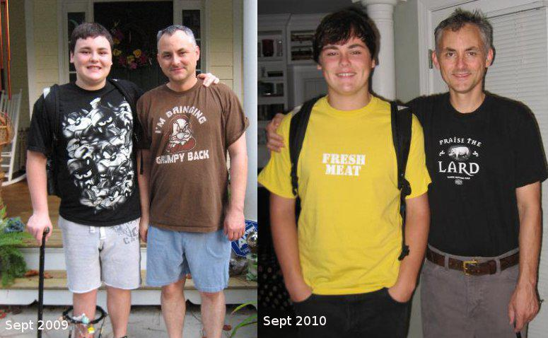

Most everything I ever knew about diet, exercise and nutrition was wrong...
For the young and hip, just go to reddit/r/keto
The First 30 days
The Whole 30 ProgramBelow here are the articles that helped and motivated me in 2009/2010
The How..
http://www.paleonu.com/get-startedThe Why..
Find and Watch the videos 'Big Fat Lies' and 'Sugar: The Bitter Truth'
The Book..
"Good Calories, Bad Calories" by Gary Taubes
Farrell and I after a year of eating better

Read! The truth will make you Healthy.
Lesson #1: Lifelong Health Starts Here
Lesson #2: How Agriculture Ruined Your Health (and What to Do About It)
Lesson #3: Why Eating Animals Makes Everything Easier
Lesson #4: What to Eat and What to Avoid for Lifelong Health
Diagnosed with Type II, cured with Paleo. Dropped 73 lbs in a year.
http://paleoeater.blogspot.com/Good article about the transition from burning sugar/carbs to burning fat/protein.
Theory to practiceIs Sugar Toxic? — By Gary Taubes
Why Fast?
- Weight Loss
- Cancer fighting
- Longevity
- Brain Function
- Workout Recovery
- Choose a Method
Gary Taubes "inescapable" conclusions (p.454):
1. Dietary fat, whether saturated or not, is not a cause of obesity, heart disease or any other chronic disease of civilization.
2. The problem is the carbohydrates in the diet, their effect on insulin secretion, and thus the hormonal regulation of homeostasis, the entire harmonic ensemble of the human body. The more easily digestible and refined the carbohydrates, the greater the effect on your health, weight and well-being.
3. Sugars (sucrose and high-fructose corn syrup specifically) are particularly harmful, probably because the combination of fructose and glucose simultaneously elevates insulin levels while overloading the liver with carbohydrates.
4. Through their direct effect on insulin and blood sugar, refined carbohydrates, starches and sugars are the dietary cause of coronary heart disease and diabetes. They are the most likely dietary causes of cancer, Alzheimers disease, and the other chronic diseases of civilization.
5. Obesity is a disorder of excess fat accumulation, not overeating, and not sedentary behavior.
6. Consuming excess calories does not cause us to grow fatter, any more than it causes a child to grow taller. Expending more energy than we consume does not lead to long-term weight loss; it leads to hunger.
7. Fattening and obesity are caused by an imbalance — a disequilibrium — in the hormonal regulation of adipose tissue and fat metabolism.
8. Insulin is the primary regulator of fat storage. When insulin levels are elevated (either chronically or after a meal) we accumulate fat in our fat tissue. When insulin levels fall, we release fat from our fat tissue and use it for fuel.
9. By stimulating insulin secretion, carbohydrates make us fat and ultimately cause obesity. The fewer carbohydrates we consume, the leaner we will be.
10. By driving fat accumulation, carbohydrates also increase hunger and decrease the amount of energy we expend in metabolism and physical activity.